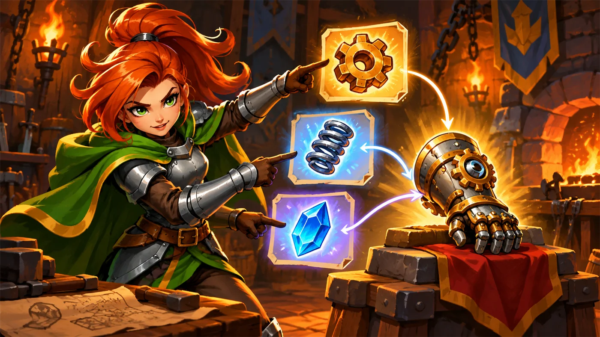
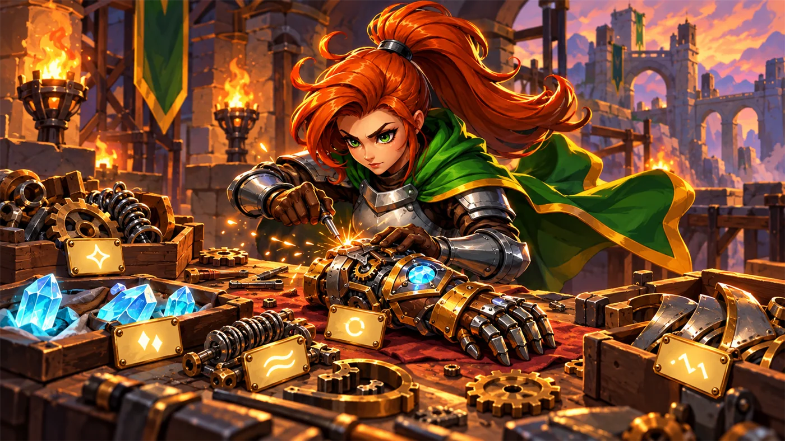

故事：装配台旁立着一块告示牌，上面只有一串神秘的单字母指令：
a、s、p、g……
你正发愣，戈登递来一本小册子：别猜了，每个字母都对应一种兵种。
照着小册子造兵就行。
字母是"键"，兵种是"值"——这正是字典最经典的用法。
扣哒考级 · GESP PYTHON 四级 · 第 3 单元 | 齿轮高台 GEARWATCH TERRACE
零件装配台 数据组织：字典与结构化数据
Dictionaries & Structured Data

戈登
齿轮工程师 · 你的向导
装配台的墙上钉着一整面名牌柜，每个小抽屉上都写着一个名字：螺钉、齿轮、弹簧、垫片……
你要哪个零件，不用翻，看一眼名字，直接拉抽屉。
你好奇地问：为什么不按顺序编号呢？
戈登把一枚齿轮放上装配台：因为零件会换位置啊。编号会变，名字不会变。
你好奇地问：为什么不按顺序编号呢？
戈登把一枚齿轮放上装配台：因为零件会换位置啊。编号会变，名字不会变。
戈登 · 齿轮工程师
上一单元我们见过字典了，那时候它只是"嵌套结构里的一个零件"。这一单元，我们把字典当成主角来讲透。
它解决的核心问题只有一个：当你想"按名字找东西"时，列表就不够用了。
assets/illustrations/py-L4-03-01_parts_map.webp
【配图位】装配台后方一整面名牌柜，每个抽屉贴着不同的标签（螺钉、齿轮、弹簧……）；台面上摊开一本对应手册，一名工程师正把手里的零件与手册上的条目比对。
0 单元导语与目标
Unit Overview
0.1 学习目标
1学完这个单元，你将能……
- 说清字典和列表的本质区别
- 创建字典并用键访问值
- 熟练地增、改、删字典里的条目
- 用三种方式遍历字典
- 用字典做"映射表"和"计数器"
- 判断什么数据适合用字典来组织
2对标 GESP 考纲（Python 四级）
- 掌握字典的创建、访问、修改与删除
- 掌握字典的遍历方法（keys / values / items）
- 掌握字典的常用函数：len、in、get、keys、values、items
- 考核目标：能用字典组织结构化数据并解决实际问题
0.2 考纲对照
| 本单元小节 | 对应考纲条目 | 真题常考形式 |
|---|---|---|
| 1 为什么需要字典 | 字典的概念与作用 | 字典和列表的区别；什么时候该用字典 |
| 2 创建与访问 | 字典的创建与取值 | 用键取值；取不存在的键会怎样 |
| 3 增、改、删 | 字典的修改操作 | 新增、修改、删除分别怎么写 |
| 4 遍历字典 | 字典的遍历 | 遍历键、值、键值对三种写法 |
1 为什么需要字典
Why Dictionaries
1.1 先看一个真实场景
先看一个真实场景。假设要记录一个学生的成绩：
用列表存：位置一换就乱套
Python
# 还要靠"记住第几位是什么"才读得懂
student = ["小明", 13, 95, "三年二班"]
print(student[2]) # 95？可如果哪天加了字段，位置全变问题 别人看你的代码，根本不知道 student[2] 到底是什么
用字典存：一眼看懂，加字段也不怕
Python
student = {"姓名": "小明", "年龄": 13, "成绩": 95, "班级": "三年二班"}
print(student["成绩"]) # 95 —— 想取什么就写什么，不用记位置好处 代码自带说明；以后再加"性别""身高"，顺序也不会乱
图 2（SVG）：列表按位置找，字典按名字找
1.2 三个名词
打个比方：
列表像一排没有标签的抽屉——只能按"第几个"去找东西；
字典像一排贴了标签的抽屉——直接看标签就能找到，不用数。
标签（键）是唯一的，一个标签只对应一个抽屉；但不同抽屉里装什么，各不一样。
字典像一排贴了标签的抽屉——直接看标签就能找到，不用数。
标签（键）是唯一的，一个标签只对应一个抽屉；但不同抽屉里装什么，各不一样。
三个名词：
键（key）——那个"名字"，比如
值（value）——那个"内容"，比如
键值对——一个键配一个值，写作
字典就是一堆键值对的集合，用花括号
"成绩"；值（value）——那个"内容"，比如
95；键值对——一个键配一个值，写作
键: 值。字典就是一堆键值对的集合，用花括号
{} 包起来。
2 创建与访问
Creating & Accessing
2.1 创建与访问
创建与取值的四种写法
Python
d = {"a": 1, "b": 2} # 直接写出来
e = {} # 空字典
print(d["a"]) # 取值 → 1
print(d.get("a")) # 用 get 取值 → 1
print(d.get("z")) # 键不存在 → None（不会报错）
print(d.get("z", 0)) # 给个默认值 → 0
print("a" in d) # 判断键是否存在 → True
print(len(d)) # 有几个键值对 → 2OUTPUT 1
1
None
0
True
2
1
None
0
True
2
2.2 取不存在的键会怎样

assets/illustrations/py-L4-03-02_member_access.webp
【配图位】装配台上立着一件已经装好的护手成品，金属光泽、齿轮与水晶都嵌在其中；成品右侧悬浮着三块发光面板，分别显示它的"齿轮数""弹簧数""水晶数"，每块面板上都有一个键名标签；一名英雄伸手指着第一块面板逐一读出。
d["z"] 和 d.get("z") 的区别：
考试里"安全取值"一律用 get。
d["z"] 在键不存在时会直接报错（KeyError）；d.get("z") 会返回 None，不会让程序崩掉。考试里"安全取值"一律用 get。
3 增、改、删
Add / Update / Delete
3.1 增加与修改
三种操作
Python
d = {"a": 1, "b": 2}
d["c"] = 3 # 增：键不存在就新建 → {"a":1,"b":2,"c":3}
d["a"] = 99 # 改：键已存在就覆盖 → a 变成 99
del d["b"] # 删：删掉 b 这一对
print(d) # {'a': 99, 'c': 3}
d.pop("c") # 也可以用 pop 删，还会把值返回
print(d) # {'a': 99}要点 增和改用的是同一句：键在就改，键不在就增
3.2 删除一个键
4 遍历字典
Traversal
4.1 遍历字典
三种遍历方式
Python
d = {"塔林": 100, "安雅": 80, "艾达": 60}
# 方式一：只遍历键（默认）
for k in d:
print(k)
# 方式二：只遍历值
for v in d.values():
print(v)
# 方式三：同时拿到键和值（最常用）
for k, v in d.items():
print(k, v)OUTPUT 塔林 安雅 艾达
100 80 60
塔林 100 安雅 80 艾达 60
100 80 60
塔林 100 安雅 80 艾达 60
4.2 两个顺手模式
assets/illustrations/py-L4-03-03_dict_lookup.webp
【配图位】装配台旁的一排抽屉柜，每只抽屉正面贴着一张发光标签（写着名字），抽屉里的东西各不相同；一名英雄完全没有去数第几个抽屉，而是直接读出标签名、伸手拉开那只抽屉；旁边另一排没有标签的抽屉则被画上淡淡的问号，表示"只能靠数"。
做题顺手的两个模式：
模式一（汇总）：
模式二（找最值）：
记得同时把"最好的那个键"也存下来。
模式一（汇总）：
for v in d.values(): total += v；模式二（找最值）：
for k, v in d.items(): if v > best: ...，记得同时把"最好的那个键"也存下来。
5 代码实战
Level Practice
关卡
编码订单
进入关卡 →思路：先把"字母 → 兵种"的对应关系写成一本"字典小册子"，


assets/stages/py-L4-03-stage1_encoding_order.webp
【关卡截图位】请把《编码订单》的游戏画面截图放到此处（放入 assets/stages/ 目录，文件名为 py-L4-03-stage1_encoding_order.webp）。
重点示例：把对应关系写成字典
Python
summonTypes = {
"a": "archer",
"s": "soldier",
"p": "peasant"
}
# 用指令字母去查表
type = summonTypes[num]要点 键是"代号"，值是"实际的东西"；查表比一串 if-elif 清爽得多
这就是"映射表"：
用字典做映射，是程序里最常见的组织方式之一——
省份代码 → 省份名、单词 → 释义、天数 → 日期……
凡是"一个对一个"的对照关系，都该用字典。
去扣哒世界闯这一关 →
省份代码 → 省份名、单词 → 释义、天数 → 日期……
凡是"一个对一个"的对照关系，都该用字典。
6 常见陷阱
Common Pitfalls

扣哒鸭 · 调试官
字典的错都很"安静"——不报错，但结果不对。四条，条条都值得记下来。
1
用下标访问字典。写成
d[0] 而不是 d["a"]。
扣哒鸭：字典里没有"第 0 项"这种说法，它只有键。
写
写
d[0] 会报 KeyError，除非你正好有个键叫数字 0。正确写法：
d["键名"] 或 d.get("键名")2
键名写错一个字。建的时候是
"name"，取的时候写成 "Name"。
扣哒鸭：键是区分大小写的，name 和 Name 是两个不同的键。
建议养成习惯：所有键统一用小写字母。
建议养成习惯：所有键统一用小写字母。
实用建议：键名统一大小写风格，别一会儿大写一会儿小写
3
遍历时想"顺便改字典"。一边 for 一边增删键。

扣哒鸭：循环的时候改动字典的大小，Python 会抛 RuntimeError。
真要改，先把键收集到一个列表里，循环完再改。
真要改，先把键收集到一个列表里，循环完再改。
正确做法：遍历用
list(d.keys()) 复制一份键，再操作4
以为
d.values() 返回的是列表。直接拿去用下标。
扣哒鸭：它返回的是一个"视图"，能遍历但不能下标。
真想变列表：
真想变列表：
list(d.values())。正确写法：
list(d.values())7 题目练习
Practice
第 1 题改编自 2026 年 9 月 · Python 四级 第 13 题，其余为原创练习题。
改编自 2026 年 9 月 · Python 四级 · 第 13 题单选题
齿轮高台的道闸要根据交通灯颜色返回动作（停、等、行），下面的函数用字典来做"颜色 → 动作"的映射。
横线处应该填入的代码是（ ）。
横线处应该填入的代码是（ ）。
1 def traffic_action(color):
2 actions = {"红": "停", "黄": "等", "绿": "行"}
3 if color in actions:
4 return _____①_____
5 else:
6 return "无效颜色"
7
8 color = input("输入交通灯颜色: ")
9 action = traffic_action(color)
10 print(f"颜色 {color} 对应的动作是: {_____②_____}")A.①
B.①
C.①
D.①
actions[color] ② actionB.①
actions[color] ② colorC.①
actions.get(color) ② actionsD.①
actions.get(color, "无效颜色") ② color查看答案与详解
答案：A。第 3 行已经用
②处要打印的是动作，而第 9 行已经把函数返回的动作存进了
为什么不用
B 错：②打成了颜色而不是动作；
C 错：②把整个字典打印出来了，输出变成字典本身的内容；
D 错：①用
对应小节2 创建与访问。
if color in actions 确认过"键一定存在"，所以①处直接用方括号取值 actions[color] 最自然；②处要打印的是动作，而第 9 行已经把函数返回的动作存进了
action 变量，所以填 action。为什么不用
get()？虽然 actions.get(color) 也能取到值，但既然前面已经判断过键存在，就没有必要再用 get() 兜底 ——这是"先判断、再取值"的标准写法。B 错：②打成了颜色而不是动作；
C 错：②把整个字典打印出来了，输出变成字典本身的内容；
D 错：①用
get(color, "无效颜色") 与上面的 if 分支重复，且②又打成了颜色。对应小节2 创建与访问。
原创练习题单选题
已知
d = {"a": 1, "b": 2, "c": 3}，则 d["b"] 的值是（ ）。A.1 B.2 C.3 D.报错
查看答案与详解
答案：B。字典用键取值：
易错点：不要按列表的思维去数"第几个"。
对应小节2 创建与访问。
d["b"] 取出键 "b" 对应的值 2。易错点：不要按列表的思维去数"第几个"。
对应小节2 创建与访问。
原创练习题单选题
下列 Python 代码执行后，输出的结果是（ ）。
1 d = {"x": 1, "y": 2}
2 d["z"] = 3
3 d["x"] = 10
4 print(len(d), d["x"])
A.2 10 B.3 10 C.3 1 D.报错
查看答案与详解
答案：B。
所以
对应小节3 增、改、删。
d["z"] = 3 是新增（键 z 原本不存在），字典变成 3 项；d["x"] = 10 是修改（键 x 已存在），把 1 改成 10。所以
len(d) 是 3，d["x"] 是 10。对应小节3 增、改、删。
原创练习题判断题
已知
d = {"a": 1}，那么 d.get("b")
会返回 None，而 d["b"] 会报错。（ ）查看答案与详解
答案：正确（√）。
实用技巧：
对应小节2 创建与访问。
get() 是"安全取值"，
键不存在时返回 None；而用方括号取值时键不存在会抛
KeyError。实用技巧：
d.get("b", 0) 可以在键不存在时返回 0，做计数特别方便。对应小节2 创建与访问。
原创练习题单选题
下列 Python 代码执行后，输出的结果是（ ）。
1 d = {"甲": 3, "乙": 7, "丙": 5}
2 s = 0
3 for v in d.values():
4 s = s + v
5 print(s)
A.3 B.7 C.15 D.报错
查看答案与详解
答案：C。
这是字典最常用的模式之一：把所有的值加起来。
对应小节4 遍历字典。
d.values() 依次给出 3、7、5，
累加得 15。这是字典最常用的模式之一：把所有的值加起来。
对应小节4 遍历字典。
原创练习题单选题
下列 Python 代码执行后，输出的结果是（ ）。
1 d = {"甲": 3, "乙": 7, "丙": 5}
2 best = 0
3 for k, v in d.items():
4 if v > best:
5 best = v
6 print(best)
A.3 B.5 C.7 D.甲
查看答案与详解
答案：C。遍历所有的"键值对"，找出最大的值，结果是 7。
进阶：如果题目要问"谁的值最大"，就得再用一个变量记住对应的键 （
对应小节4 遍历字典。
进阶：如果题目要问"谁的值最大"，就得再用一个变量记住对应的键 （
bestKey = k）。对应小节4 遍历字典。
原创练习题判断题
在 Python 中，字典的键可以是数字，也可以是字符串。（ ）
查看答案与详解
答案：正确（√）。字典的键只要不可变就行，
数字、字符串、元组都可以做键。
例如
注意：列表不能做键，因为它可以被修改。
对应小节1 为什么需要字典。
例如
d = {1: "one", 2: "two"} 是完全合法的，
取值时写 d[1]。注意：列表不能做键，因为它可以被修改。
对应小节1 为什么需要字典。
原创练习题编程题
题目要求：已知一段文字中用空格分隔了若干个单词，
请用字典统计每个单词出现的次数，并输出出现次数最多的那个单词及其次数。
查看参考答案与要点
s = "apple banana apple cherry banana apple"
words = s.split()
# 用字典当计数器
count = {}
for w in words:
count[w] = count.get(w, 0) + 1
# 输出结果
for k, v in count.items():
print(k, v)
# 找出现次数最多的
bestKey = ""
bestVal = 0
for k, v in count.items():
if v > bestVal:
bestVal = v
bestKey = k
print("最多：", bestKey, bestVal)
输出：apple 3、banana 2、cherry 1，最多：apple 3
要点：
① count.get(w, 0) + 1 是"字典计数"的经典写法——
键不存在时当作 0，再加 1；
② 求最值时要同时记住"键"和"值"，所以用两个变量；
③ 这种"用字典统计"的套路，在四级和五级考试里都很常见。
对应小节4 遍历字典。
8 本单元小结
Unit Summary
戈登 · 齿轮工程师
三句话记住字典：一、字典靠"名字"找东西，列表靠"位置"找东西。
二、取值用 d["键"]，怕报错就用 d.get("键", 默认值)。
三、遍历键值对用 d.items()，两个变量一起接。
会用字典，你的程序就能"装得下现实世界"了。
你在零件装配台收获了什么
- 字典——
{"键": 值, ...}，按名字存取，顺序无关。 - 取值——
d["键"]（不存在会报错）；d.get("键", 默认值)（安全）。 - 增与改——都用
d["键"] = 值：键在就改，键不在就增。 - 删除——
del d["键"]或d.pop("键")。 - 判断与长度——
"键" in d、len(d)。 - 遍历——
for k in d（键）、d.values()（值）、d.items()（键值对）。 - 两大用法——映射表（字母→兵种）与计数器（
get(k,0)+1）。